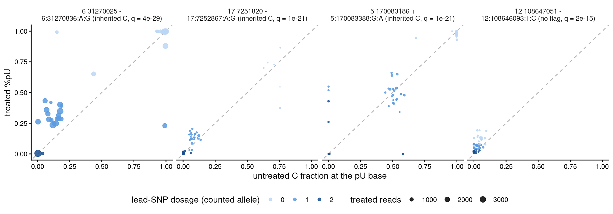
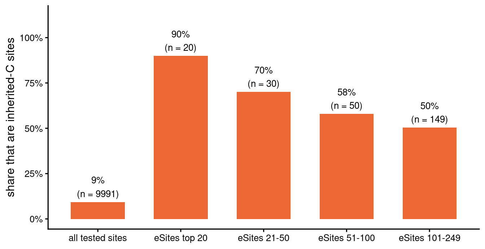
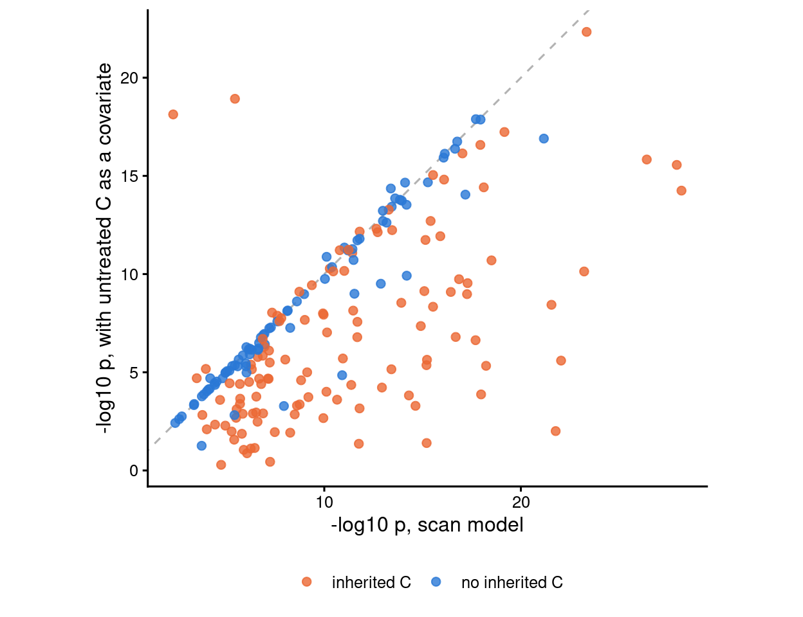
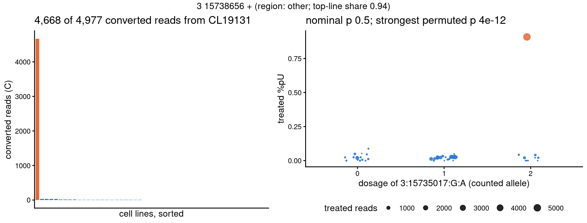
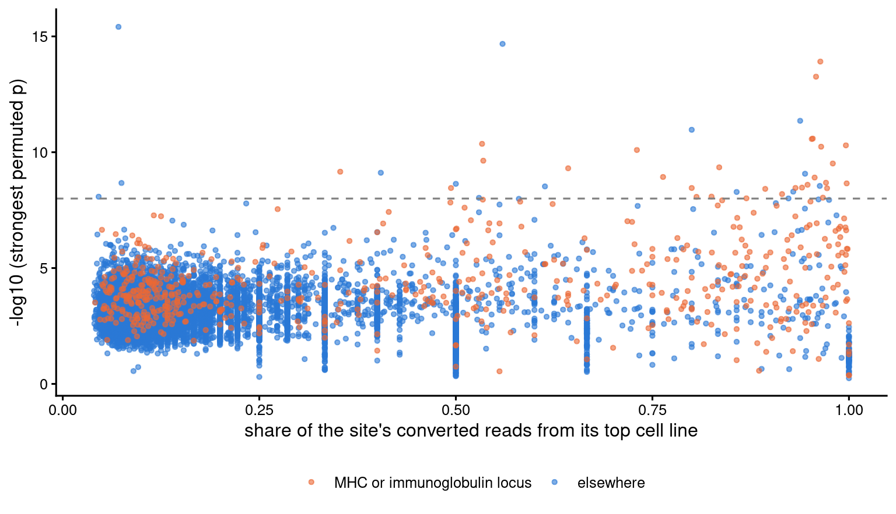

Last updated: 2026-11-12
Checks: 6 1
Knit directory: pumseq/
This reproducible R Markdown analysis was created with workflowr (version 1.7.0). The Checks tab describes the reproducibility checks that were applied when the results were created. The Past versions tab lists the development history.
The R Markdown is untracked by Git. To know which version of the R
Markdown file created these results, you’ll want to first commit it to
the Git repo. If you’re still working on the analysis, you can ignore
this warning. When you’re finished, you can run
wflow_publish to commit the R Markdown file and build the
HTML.
Great job! The global environment was empty. Objects defined in the global environment can affect the analysis in your R Markdown file in unknown ways. For reproduciblity it’s best to always run the code in an empty environment.
The command set.seed(20260202) was run prior to running
the code in the R Markdown file. Setting a seed ensures that any results
that rely on randomness, e.g. subsampling or permutations, are
reproducible.
Great job! Recording the operating system, R version, and package versions is critical for reproducibility.
Nice! There were no cached chunks for this analysis, so you can be confident that you successfully produced the results during this run.
Great job! Using relative paths to the files within your workflowr project makes it easier to run your code on other machines.
Great! You are using Git for version control. Tracking code development and connecting the code version to the results is critical for reproducibility.
The results in this page were generated with repository version e23ea81. See the Past versions tab to see a history of the changes made to the R Markdown and HTML files.
Note that you need to be careful to ensure that all relevant files for
the analysis have been committed to Git prior to generating the results
(you can use wflow_publish or
wflow_git_commit). workflowr only checks the R Markdown
file, but you know if there are other scripts or data files that it
depends on. Below is the status of the Git repository when the results
were generated:
Ignored files:
Ignored: analysis/qtl_mapping_summary_cache/
Untracked files:
Untracked: analysis/stage1_open_questions.Rmd
Untracked: analysis/stage1_phenotype_preparation.Rmd
Note that any generated files, e.g. HTML, png, CSS, etc., are not included in this status report because it is ok for generated content to have uncommitted changes.
There are no past versions. Publish this analysis with
wflow_publish() to start tracking its development.
suppressMessages({ library(data.table); library(ggplot2) })
knitr::opts_chunk$set(echo = TRUE, warning = FALSE, message = FALSE)
Q <- "/project/xinhe/xsun/pumseq/pumseq_processed/psi_qtl/qtl_betabinomial"
D <- file.path(Q, "stage1_open_questions")
S <- fread(file.path(D, "sites.tsv"), colClasses = list(character = "ref"))
EX <- fread(file.path(D, "examples.tsv"))
FL <- fread(file.path(D, "farlead.tsv"), colClasses = list(character = "ref"))
FLK <- fread(file.path(Q, "untreated_covariate/firstlook_w5kb_pc3_by_site.tsv"))
FLS <- fread(file.path(Q, "untreated_covariate/firstlook_w5kb_pc3_summary.tsv"))
SC <- fread(file.path(Q, "pc_window_selection/fold5_union_auto_noUCcalled/summary/selection_no_inheritedC.tsv"))
n_clean_q <- SC[window_kb == 5 & npcs == 3, eSites_clean_q10]
fmt <- function(x) format(x, big.mark = ",", trim = TRUE, scientific = FALSE)
pct <- function(x) sprintf("%.0f%%", 100 * x)
th <- theme_classic(base_size = 12) + theme(strip.background = element_blank(), legend.position = "bottom")
FLAG <- "#eb6834"; OTHER <- "#2a78d6"; DOSE <- c(`0` = "#bcd7f5", `1` = "#5b9be0", `2` = "#1a4f8f")
E <- S[eSite == TRUE]
nE <- nrow(E); nIC_E <- E[inherited_C == TRUE, .N]; nT <- nrow(S); nIC_T <- S[inherited_C == TRUE, .N]Both questions concern sites whose %pU may reflect something other than genetic regulation of pseudouridylation. Each needs a decision before the final QTL scan. Numbers are from the k x window selection scan at 5 kb, k = 3, where eSites are sites with q < 0.10 (249 eSites among 9,991 tested sites).
The issue. pU is read out as a T-to-C change at the pU base. If a cell line carries a C allele at that base in its genome, its reads show C whether or not the base is modified, and the site’s %pU tracks genotype. We already remove sites with a called U/C variant on the pU base (1,118 sites). The untreated controls (no chemistry, so any C is inherited) show that the problem is wider: 1,057 of the remaining sites have a cell line with >= 10% C at the pU base in untreated RNA (>= 10 reads, >= 2 C reads), but no called variant. These are presumably variants missing from the genotype calls.
At an inherited-C site, the treated %pU of each cell line follows its untreated C fraction, and both follow a nearby SNP. At an unflagged eSite the untreated C stays near zero and the treated %pU varies on its own.
e1 <- EX[kind %in% c("inherited C", "no flag")]
e1[, `:=`(treated = C / N, untreated = fifelse(uN >= 10, uC / uN, NA_real_), dose = factor(round(dosage)))]
e1[, panel := sprintf("%s\n%s (%s, q = %.1g)", sid, lead_snp, kind, q)]
e1[, panel := factor(panel, unique(panel[order(kind != "inherited C")]))]
ggplot(e1[N > 0 & !is.na(untreated)], aes(untreated, treated, colour = dose)) +
geom_abline(slope = 1, intercept = 0, colour = "grey70", linetype = 2) +
geom_point(aes(size = N), alpha = 0.85) + facet_wrap(~ panel, nrow = 1) +
scale_colour_manual(values = DOSE, name = "lead-SNP dosage (counted allele)", na.value = "grey60") +
scale_size_area(max_size = 4, name = "treated reads") +
labs(x = "untreated C fraction at the pU base", y = "treated %pU") + th
Each point is a cell line with >= 10 untreated reads. Dashed line: treated = untreated.
setorder(E, perm_p); E[, rank := .I]
grp <- function(r) cut(r, c(0, 20, 50, 100, Inf), labels = c("top 20", "21-50", "51-100", sprintf("101-%d", nE)))
sh <- rbind(data.table(set = "all tested sites", n = nT, share = nIC_T / nT),
E[, .(n = .N, share = mean(inherited_C)), by = .(set = paste("eSites", grp(rank)))])
sh[, set := factor(set, set)]
ggplot(sh, aes(set, share)) + geom_col(fill = FLAG, width = 0.65) +
geom_text(aes(label = sprintf("%s\n(n = %d)", pct(share), n)), vjust = -0.25, size = 3.4) +
scale_y_continuous(limits = c(0, 1.12), breaks = seq(0, 1, 0.25), labels = function(x) pct(x)) +
labs(x = NULL, y = "share that are inherited-C sites") + th
Inherited-C sites are 9% of tested sites but 57% of eSites (143 of 249), and the share rises with significance. Setting them aside leaves 106 eSites at the same q-values, or 79 after recomputing q without them.
We tested one alternative to removal. The untreated C fraction of each cell line (standardised per site) was added to the model at the 204 eSites (q < 0.05), with the same 100 permutations. If a site’s signal is inherited C, its p-value should weaken; otherwise it should not change.
FLK[, group := fifelse(inherited_C, "inherited C", "no inherited C")]
ggplot(FLK, aes(nlp_before, nlp_after, colour = group)) +
geom_abline(slope = 1, intercept = 0, colour = "grey70", linetype = 2) + geom_point(size = 2, alpha = 0.8) +
scale_colour_manual(values = c(`inherited C` = FLAG, `no inherited C` = OTHER), name = NULL) + coord_equal() +
labs(x = "-log10 p, scan model", y = "-log10 p, with untreated C as a covariate") + th
s1 <- FLS[group == "inherited C"]; s0 <- FLS[group == "no inherited C"]At inherited-C eSites the median -log10 p falls from 9.93 to 5.61, and 58 of 121 stay significant. At the other eSites it barely moves (6.98 to 6.83; 74 of 83 stay). So part of the inherited-C signal is explained by inherited C, and part is not. In a genome-wide permutation check the covariate model had a heavier permuted tail than the scan model, almost all of it from 3 sites where the fit failed (in the MHC, the IGH locus and chr14:51.3 Mb).
knitr::kable(data.table(
option = c("1. Remove all inherited-C sites", "2. Untreated C as a covariate", "3. Mask lines", "4. Mixture model", "5. Keep and flag"),
what = c("drop the 1,057 sites (a filtered phenotype already exists)",
"add each line's untreated C fraction to the model",
"set the phenotype missing for lines that show inherited C at the site",
"expected treated C = a_i + (1 - a_i) mu_i, a_i = line i's inherited fraction",
"run as now, report inherited-C sites separately"),
pro = c("simple and conservative", "keeps sites; tested: removes much of the artefact",
"removes the contaminated observations only", "models the read-out directly", "no information lost"),
con = c("loses any real pU-QTL at 9% of sites; depends on the flag thresholds",
"fit failures at a few sites; untreated depth < 10 in 14% of entries",
"lines with low untreated depth cannot be checked", "new model; not yet tested",
"most eSites stay artefact-prone")),
col.names = c("option", "what", "for", "against"))| option | what | for | against |
|---|---|---|---|
| 1. Remove all inherited-C sites | drop the 1,057 sites (a filtered phenotype already exists) | simple and conservative | loses any real pU-QTL at 9% of sites; depends on the flag thresholds |
| 2. Untreated C as a covariate | add each line’s untreated C fraction to the model | keeps sites; tested: removes much of the artefact | fit failures at a few sites; untreated depth < 10 in 14% of entries |
| 3. Mask lines | set the phenotype missing for lines that show inherited C at the site | removes the contaminated observations only | lines with low untreated depth cannot be checked |
| 4. Mixture model | expected treated C = a_i + (1 - a_i) mu_i, a_i = line i’s inherited fraction | models the read-out directly | new model; not yet tested |
| 5. Keep and flag | run as now, report inherited-C sites separately | no information lost | most eSites stay artefact-prone |
To decide: which option is primary for the final scan (and which is a sensitivity analysis), and whether the flag thresholds (>= 10 untreated reads, >= 10% C, >= 2 C reads) are reasonable.
The issue. At some sites a single cell line supplies most of the converted reads. The beta-binomial null model then cannot describe the site, and any SNP whose genotype separates that line from the rest gives a small p-value, in real and in permuted data alike. Problem sites of this and other kinds concentrate in the MHC and the immunoglobulin (IGH, IGK, IGL) loci. Both regions are special in LCLs: the cell lines are clonal B cells, so the immunoglobulin loci are rearranged differently in each line; the MHC is highly polymorphic and maps poorly to the reference.
e2 <- EX[kind == "one line dominates"]
e2[, `:=`(pu = fifelse(N > 0, C / N, NA_real_), dose = factor(round(dosage)))]
top <- e2[which.max(C)]
e2[, line := factor(cell_line, cell_line[order(-C)])]
e2[, who := fifelse(cell_line == top$cell_line, "top cell line", "other cell lines")]
cols <- c(`top cell line` = FLAG, `other cell lines` = OTHER)
pa <- ggplot(e2, aes(line, C, fill = who)) + geom_col(width = 0.8) + scale_fill_manual(values = cols, name = NULL) +
labs(x = "cell lines, sorted", y = "converted reads (C)",
title = sprintf("%s of %s converted reads from %s", fmt(top$C), fmt(sum(e2$C)), top$cell_line)) +
th + theme(axis.text.x = element_blank(), axis.ticks.x = element_blank(), legend.position = "none")
pb <- ggplot(e2[N > 0], aes(dose, pu, colour = who)) + geom_jitter(aes(size = N), width = 0.15, height = 0, alpha = 0.85) +
scale_colour_manual(values = cols, guide = "none") + scale_size_area(max_size = 4, name = "treated reads") +
labs(x = sprintf("dosage of %s (counted allele)", e2$lead_snp[1]), y = "treated %pU",
title = sprintf("nominal p %.1g; strongest permuted p %.1g", e2$nominal_min_p[1], e2$min_perm_p[1])) + th
gridExtra::grid.arrange(pa, pb, ncol = 2, widths = c(1, 1.15),
top = sprintf("%s (region: %s; top-line share %.2f)", e2$sid[1], e2$region[1], e2$top_line_share[1]))
At this site one cell line (orange) carries almost all the converted reads. In the real data that line shares its genotype with many others, so the site is not significant (nominal p 0.5). But a permutation that happens to place the line alone in a rare genotype group gives p = 4e-12. The permutation null of such a site is therefore far from what the beta-binomial assumes, and if the real genotype does set the line apart, the real p-value is just as extreme without reflecting a genetic effect on pseudouridylation.
For each site, the strongest p-value among its 100 permutations. Under the null, fewer than one site in the genome is expected beyond 1e-8 (dashed line).
S[, regcol := fifelse(region == "other", "elsewhere", "MHC or immunoglobulin locus")]
ggplot(S[is.finite(min_perm_p)][order(regcol == "elsewhere", decreasing = TRUE)],
aes(top_line_share, -log10(min_perm_p), colour = regcol)) +
geom_point(size = 1.1, alpha = 0.6) + geom_hline(yintercept = 8, linetype = 2, colour = "grey50") +
scale_colour_manual(values = c(`MHC or immunoglobulin locus` = FLAG, elsewhere = OTHER), name = NULL) +
labs(x = "share of the site's converted reads from its top cell line",
y = "-log10 (strongest permuted p)") + th
x8 <- S[min_perm_p < 1e-8]44 sites have a permuted p below 1e-8. Their median top-line share is 0.88 (all sites: 0.13), and 29 of them are in the MHC or immunoglobulin loci.
The same regions dominate the far tail of the +/-2 Mb nominal scan: sites whose strongest SNP lies more than 200 kb away with nothing strong nearby.
f <- FL[far == TRUE & local_signal == FALSE]
knitr::kable(f[, .N, by = region][order(-N)], col.names = c("region", "sites"),
caption = sprintf("Sites with lead p < 1e-8 whose lead SNP is > 200 kb away and with no SNP p < 1e-4 within 100 kb (%d sites).", nrow(f)))| region | sites |
|---|---|
| MHC | 10 |
| other | 9 |
| IGK | 4 |
| IGH | 3 |
| IGL | 2 |
knitr::kable(data.table(
eSites = c("all", "top-line share > 0.5", "in the MHC", "in an immunoglobulin locus", "either of the two above",
" ... of which also inherited C"),
n = c(nE, E[top_line_share > 0.5, .N], E[region == "MHC", .N], E[region %in% c("IGH", "IGK", "IGL"), .N],
E[top_line_share > 0.5 | region != "other", .N], E[(top_line_share > 0.5 | region != "other") & inherited_C == TRUE, .N])),
col.names = c("eSites (5 kb, k = 3, q < 0.10)", "n"))| eSites (5 kb, k = 3, q < 0.10) | n |
|---|---|
| all | 249 |
| top-line share > 0.5 | 8 |
| in the MHC | 61 |
| in an immunoglobulin locus | 7 |
| either of the two above | 72 |
| … of which also inherited C | 55 |
ov <- E[(top_line_share > 0.5 | region != "other")]Capping the top-line share would remove only 8 eSites, but it targets the sites that distort the permutations. The MHC holds 61 eSites, and 55 of the 72 flagged eSites are also inherited-C sites, so the two questions overlap. Inherited C is far more common in these loci: 36% of MHC sites and 54% of immunoglobulin-locus sites, against 7% elsewhere.
knitr::kable(data.table(
option = c("1. Cap the top-line share", "2. Exclude the MHC and immunoglobulin loci", "3. Keep and flag"),
what = c("drop sites where one line supplies more than a set share of converted reads (e.g. 0.5)",
"drop sites in MHC chr6:28.5-33.5 Mb, IGH chr14:105.6-106.9 Mb, IGK chr2:88.9-90.2 Mb, IGL chr22:22.0-22.9 Mb (GRCh38)",
"run as now, report these sites separately"),
pro = c("computable for any site; targets the mechanism", "standard practice in many QTL studies", "no information lost"),
con = c("the threshold is arbitrary", "removes any real pU-QTLs there", "these sites distort the permutation tail and the window choice")),
col.names = c("option", "what", "for", "against"))| option | what | for | against |
|---|---|---|---|
| 1. Cap the top-line share | drop sites where one line supplies more than a set share of converted reads (e.g. 0.5) | computable for any site; targets the mechanism | the threshold is arbitrary |
| 2. Exclude the MHC and immunoglobulin loci | drop sites in MHC chr6:28.5-33.5 Mb, IGH chr14:105.6-106.9 Mb, IGK chr2:88.9-90.2 Mb, IGL chr22:22.0-22.9 Mb (GRCh38) | standard practice in many QTL studies | removes any real pU-QTLs there |
| 3. Keep and flag | run as now, report these sites separately | no information lost | these sites distort the permutation tail and the window choice |
To decide: whether to apply option 1, option 2, or both, before the final scan; and for option 1, the share cut-off.
sites.tsv, examples.tsv and
farlead.tsv in
qtl_betabinomial/stage1_open_questions/ (made by
61.stage1_open_questions_data.R from the saved
selection-scan, untreated-control and +/-2 Mb scan results); covariate
test: qtl_betabinomial/untreated_covariate/. Related pages:
Stage 1 summary, phenotype data, permutation
check for each window and k.
sessionInfo()R version 4.2.0 (2022-04-22)
Platform: x86_64-pc-linux-gnu (64-bit)
Running under: CentOS Linux 7 (Core)
Matrix products: default
BLAS/LAPACK: /software/openblas-0.3.13-el7-x86_64/lib/libopenblas_haswellp-r0.3.13.so
locale:
[1] C
attached base packages:
[1] stats graphics grDevices utils datasets methods base
other attached packages:
[1] ggplot2_4.0.3 data.table_1.14.2
loaded via a namespace (and not attached):
[1] Rcpp_1.0.12 highr_0.9 RColorBrewer_1.1-3 pillar_1.9.0
[5] compiler_4.2.0 bslib_0.3.1 later_1.3.0 jquerylib_0.1.4
[9] git2r_0.30.1 workflowr_1.7.0 tools_4.2.0 digest_0.6.29
[13] gtable_0.3.6 jsonlite_1.8.0 evaluate_0.15 lifecycle_1.0.4
[17] tibble_3.2.1 pkgconfig_2.0.3 rlang_1.1.2 cli_3.6.1
[21] rstudioapi_0.13 yaml_2.3.5 xfun_0.41 fastmap_1.1.0
[25] gridExtra_2.3 withr_2.5.0 dplyr_1.1.4 stringr_1.5.1
[29] knitr_1.39 generics_0.1.4 fs_1.5.2 vctrs_0.6.5
[33] sass_0.4.1 tidyselect_1.2.0 rprojroot_2.0.3 grid_4.2.0
[37] glue_1.6.2 R6_2.5.1 fansi_1.0.3 rmarkdown_2.25
[41] farver_2.1.0 magrittr_2.0.3 scales_1.4.0 promises_1.2.0.1
[45] htmltools_0.5.2 dichromat_2.0-0.1 httpuv_1.6.5 labeling_0.4.2
[49] S7_0.2.0 utf8_1.2.2 stringi_1.7.6